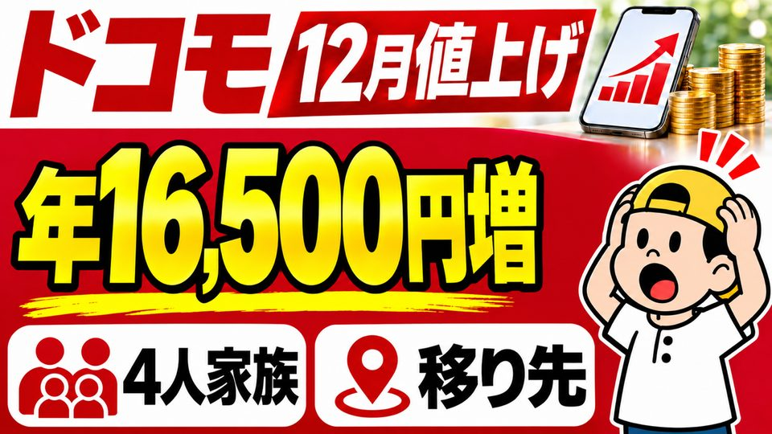
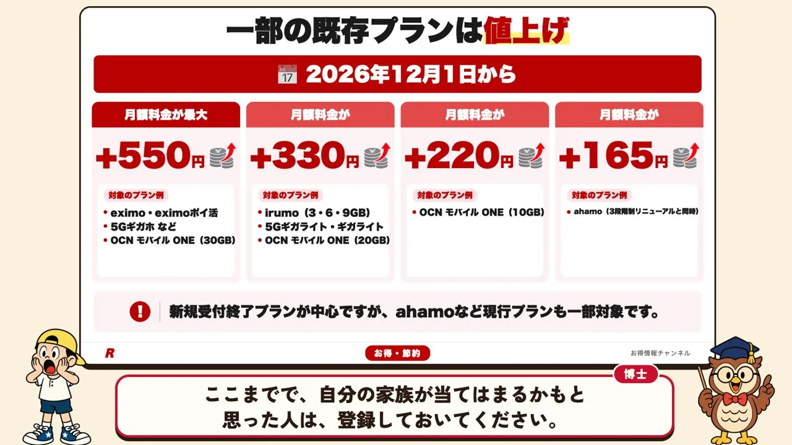
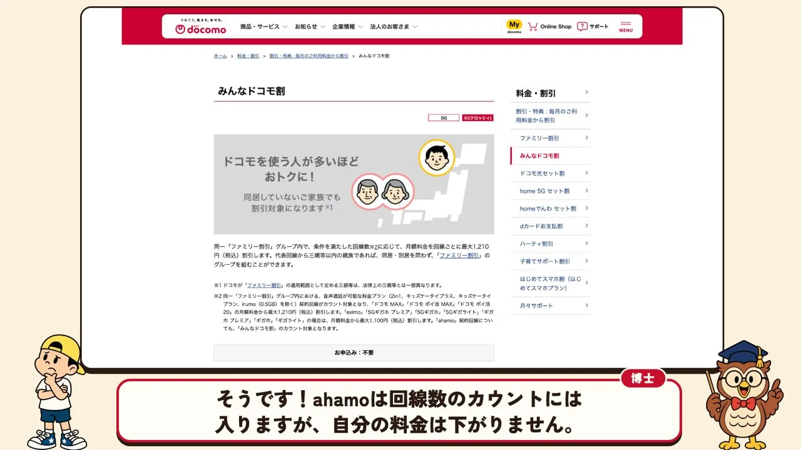
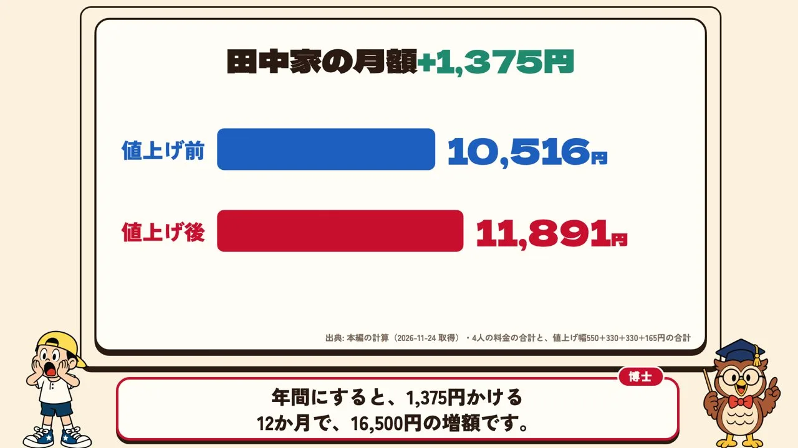
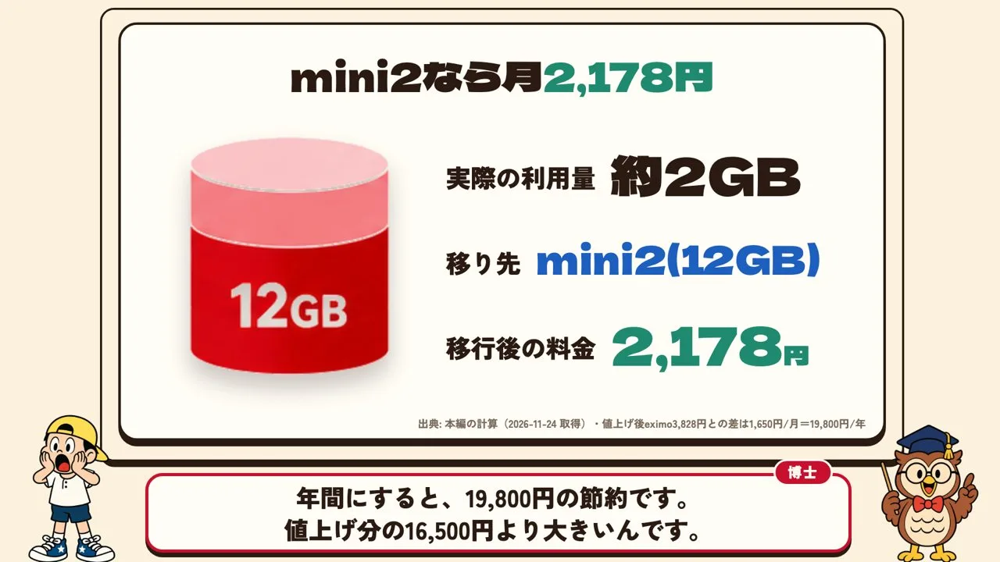
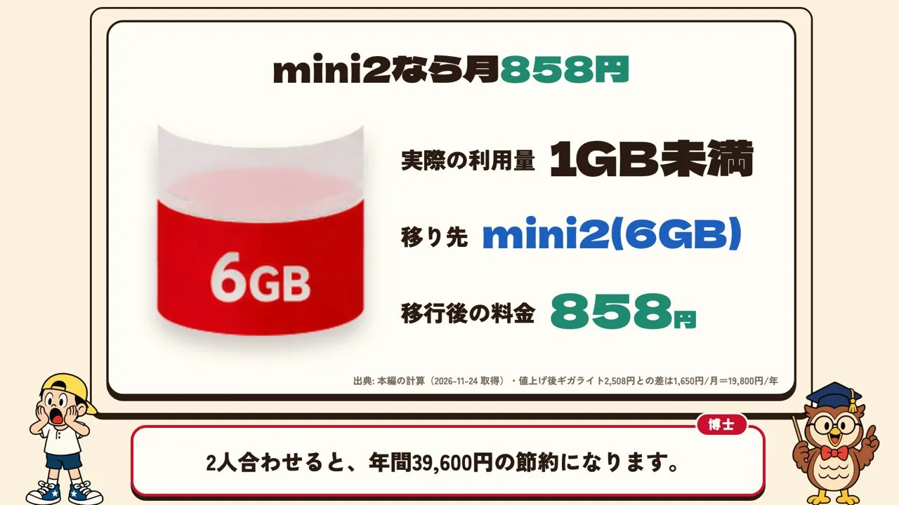
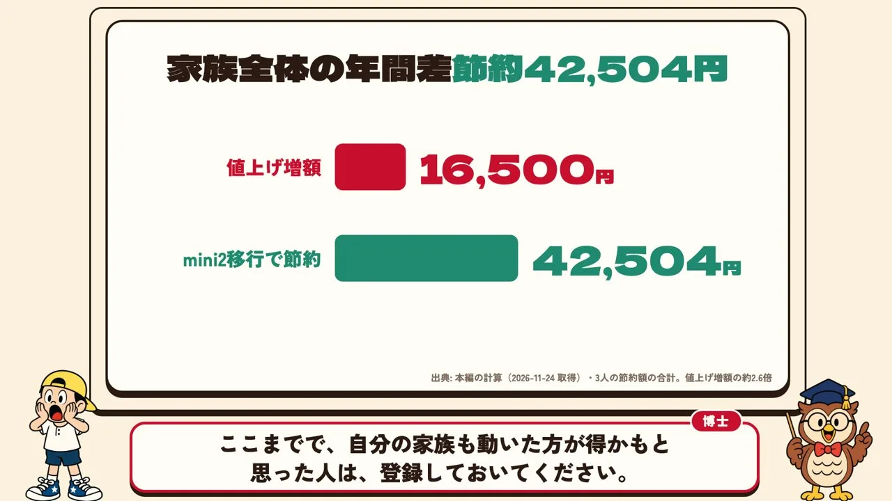
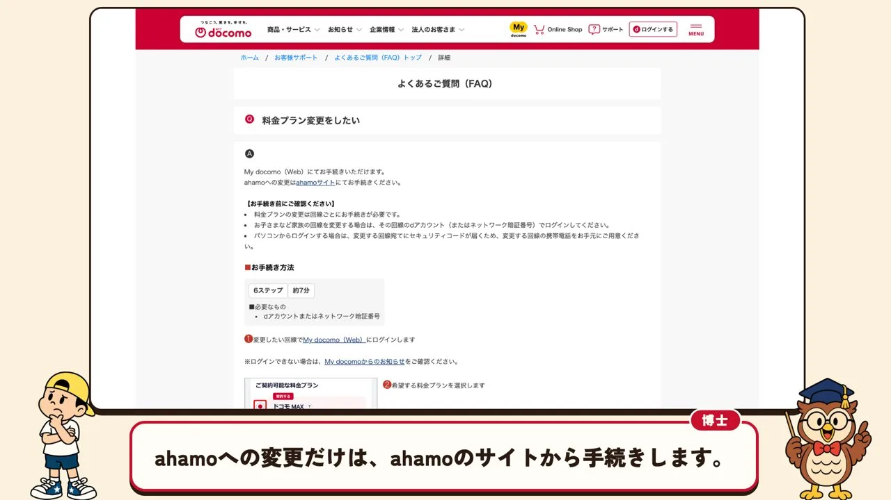

ドコモの値上げは2026年12月1日の利用分から始まり、eximo・ギガライト・irumo・ahamoなど古いプランを中心に、月額が110〜550円ずつ手続きなしで上がります。家族4人がそれぞれ別のプランを使っている例で足し合わせると、増額は月1,375円、年16,500円です。この記事では、家族の回線ごとに「いくら上がるか」と「どこへ移れば増額を消せるか」を、2026年11月24日時点のドコモ公式の料金で計算しました。

▶ この記事の内容を動画で見る（お金の総合チャンネル）01ドコモ値上げの対象と金額（12月1日から）

値上げは5つの区分に分かれます。eximoや5Gギガホなどは月550円、irumo（3・6・9GB）やギガライトは月330円、OCNモバイルONE（10GB）は月220円、ahamoは月165円、ケータイプランやirumo（0.5GB）は月110円です。いずれも税込で、12月1日の利用分から自動で上がるので、何もしなければそのまま高い料金を払い続けることになります。
| 区分 | 主な対象プラン | 値上げ幅（月） |
|---|---|---|
| 550円 | eximo・eximoポイ活・5Gギガホ など | +550円 |
| 330円 | irumo（3・6・9GB）・5Gギガライト・ギガライト | +330円 |
| 220円 | OCNモバイルONE（10GB） | +220円 |
| 165円 | ahamo（40GB・60GB・120GBの3段階制へ同時に変更） | +165円 |
| 110円 | ケータイプラン・irumo（0.5GB）など | +110円 |
一方で、ドコモ mini・ドコモ mini2・ドコモ MAXは今回の値上げの対象外です。この「対象外のプラン」が、後半で出てくる移り先になります。
02家族4人の例で増額を計算する
説明用に、お父さん・お母さん・大学生の息子さん・高校生の娘さんの架空の4人家族「田中さん一家」で計算します。4人とも別のプランを使っていて、みんなドコモ割・ドコモ光セット割・dカードお支払割を使える回線では、割引をすべて適用した参考価格で比べます。

みんなドコモ割は、家族の回線数に応じてeximoやギガライトの月額から最大1,100円を引く割引です。ただし、irumoとahamoは回線数のカウントには入るものの、自分の料金は下がりません。ここが家族の増額を計算するときの落とし穴です。
| 回線 | 今のプラン | 割引後の今の料金 | 値上げ後 | 増額（月） |
|---|---|---|---|---|
| お父さん | eximo（1GB〜3GB） | 3,278円 | 3,828円 | +550円 |
| お母さん | 5Gギガライト（ステップ1） | 2,178円 | 2,508円 | +330円 |
| 息子さん | irumo（9GB） | 2,090円 | 2,420円 | +330円 |
| 娘さん | ahamo（30GB） | 2,970円 | 3,135円 | +165円 |
| 合計 | ― | 10,516円 | 11,891円 | +1,375円 |

4人の月額合計は、値上げ前が10,516円、値上げ後が11,891円です。差は月1,375円、年にすると16,500円の増額になります。 古いプランを使う家族が多いほど、この金額はさらに大きくなります。
例お父さんのeximo（1GB〜3GB）は本来月5,665円ですが、みんなドコモ割・ドコモ光セット割・dカードお支払割の3つを使うと3,278円です。値上げ後はここに550円が足されて3,828円になります。
03増額を消す移り先を回線ごとに分ける
値上げを消す方法は、回線ごとに「実際に使っているデータ量」に合う、値上げ対象外のプランへ移ることです。12月1日から始まるドコモ mini2は、6GBで月3,278円、12GBで月4,598円ですが、みんなドコモ割・dカードお支払割・ドコモ光セット割・ドコモでんきセット割の4つを同時に使うと、6GBが858円、12GBが2,178円になります。

お父さんは実際には月2GBほどしか使っていないので、mini2の12GBに移ると割引後2,178円です。値上げ後の3,828円と比べて月1,650円、年19,800円の節約になり、この1回線だけで家族全体の増額16,500円を上回ります。

お母さんは月1GB未満なので、mini2の6GBで十分です。割引後858円になり、値上げ後の2,508円と比べて月1,650円、年19,800円の節約です。お父さんと合わせると年39,600円になります。
息子さんはirumoの9GBで足りているので、mini2の12GBに移ると2,178円です。値上げ後の2,420円との差は月242円、年2,904円と小さいものの、確実に安くなります。動画やゲームでデータを多く使うなら、40GBから使えるahamoを選んで容量に余裕を持つ考え方もあります。
娘さんのahamoは、もともと家族割の対象外で割引がないぶん、12月からも増えるのは165円だけです。12月1日からは自動で40GBの3,135円になるので、月6GBも使わない場合を除けば、そのままが基本です。

| 回線 | 移り先 | 移行後の料金 | 節約（月） | 節約（年） |
|---|---|---|---|---|
| お父さん | mini2（12GB） | 2,178円 | 1,650円 | 19,800円 |
| お母さん | mini2（6GB） | 858円 | 1,650円 | 19,800円 |
| 息子さん | mini2（12GB） | 2,178円 | 242円 | 2,904円 |
| 娘さん | ahamo（40GB）のまま | 3,135円 | ― | ― |
| 3人の合計 | ― | ― | ― | 42,504円 |
結論値上げの増額は年16,500円ですが、お父さん・お母さん・息子さんの3人がmini2へ移ると年42,504円の節約になり、増額の約2.6倍を取り返せます。
移る前に、My docomoのアプリかサイトで直近のデータ利用量を確認してください。mini2の割引後の料金は4つの割引をすべて適用した参考価格なので、ドコモ光やドコモでんきを契約していない家庭では、割引後の金額が変わります。
04手続きはMy docomoで回線ごとに

プラン変更はMy docomoのWebサイトから手続きします。家族の回線をまとめて変えることはできず、回線ごとにその回線のdアカウントかネットワーク暗証番号でログインします。 ahamoへの変更だけは、ahamoのサイトから手続きします。
注意プラン変更そのものに手数料はかかりませんが、同じ月に3回目の変更をすると1,100円の手数料がかかります。何度も変えずに、データ利用量を確認してから1回で決めるのが安全です。
- お父さん・お母さんMy docomoでmini2へ変更（12月1日から申し込める新プラン）
- 息子さん利用量を確認してmini2かahamoを選ぶ
- 娘さん何もしなくてよい（ahamoは自動で40GBの段階制へ移行）
実家のガラケーにも値上げが来る
ケータイプランは定期契約ありで月1,320円ですが、12月1日からここも110円上がります。実家のご両親がスマホに替えるタイミングなら、mini2より前からあったドコモ miniは11月30日で新規申込が終わり、12月1日からはmini2だけになる点に注意してください。ケータイプランからmini2へ移るのは機種変更も一緒になるので、プランだけの変更では済みません。
12月から変わる家計の全体像は、12月から変わるお金の世帯別早見表にまとめています。
05よくある質問
ドコモの値上げは手続きをしないとどうなりますか？
何もしなくても、2026年12月1日の利用分から自動で新しい料金になります。eximoなら月550円、ギガライトやirumoなら月330円、ahamoなら月165円が上がります。
ドコモ mini2はいつから申し込めますか？
ドコモ mini2は2026年12月1日に提供が始まります。それより前からあるドコモ miniは、11月30日で新規申込の受付が終わります。
irumoは家族割（みんなドコモ割）で安くなりますか？
irumoの3・6・9GBは、みんなドコモ割の回線数のカウントには入りますが、irumo自身の料金は割り引かれません。ドコモ光セット割とdカードお支払割だけが適用されます。
ahamoは12月からどう変わりますか？
2026年12月1日から、使った量に応じて40GBの3,135円からの3段階制になります。今の30GBの2,970円と比べると、増えるのは165円です。
06まとめ
- 値上げは2026年12月1日の利用分から自動適用で、手続きは不要
- 家族4人の例では月1,375円、年16,500円の増額
- データをあまり使わない回線は、値上げ対象外のmini2へ移ると年19,800円ずつ節約できる
- 3人がmini2へ移ると年42,504円の節約で、増額の約2.6倍
- 手続きはMy docomoで回線ごと。同じ月の3回目から手数料1,100円
家族の回線を1本ずつ見直す流れは、動画でも解説しています。